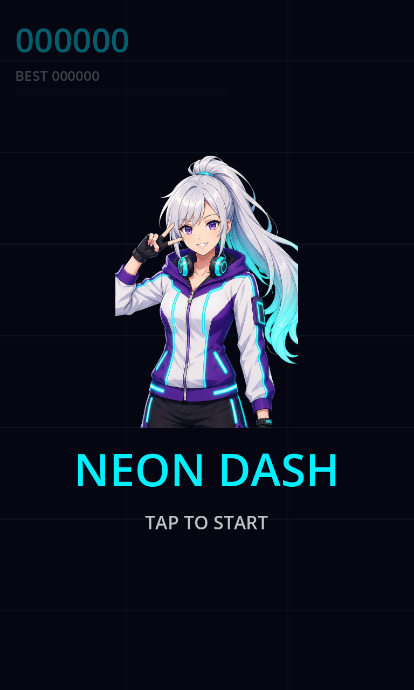
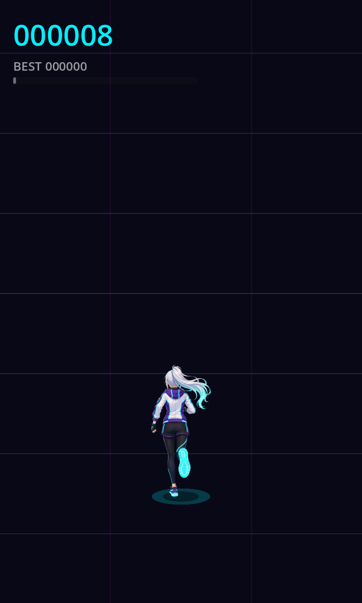
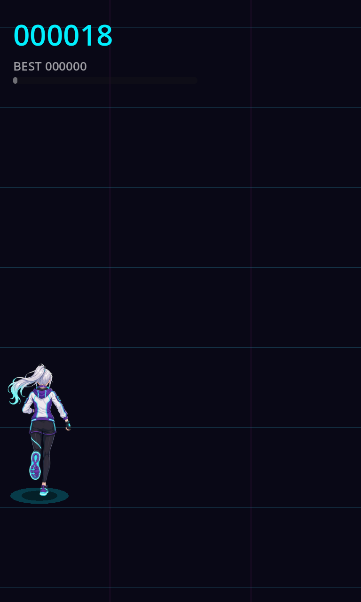
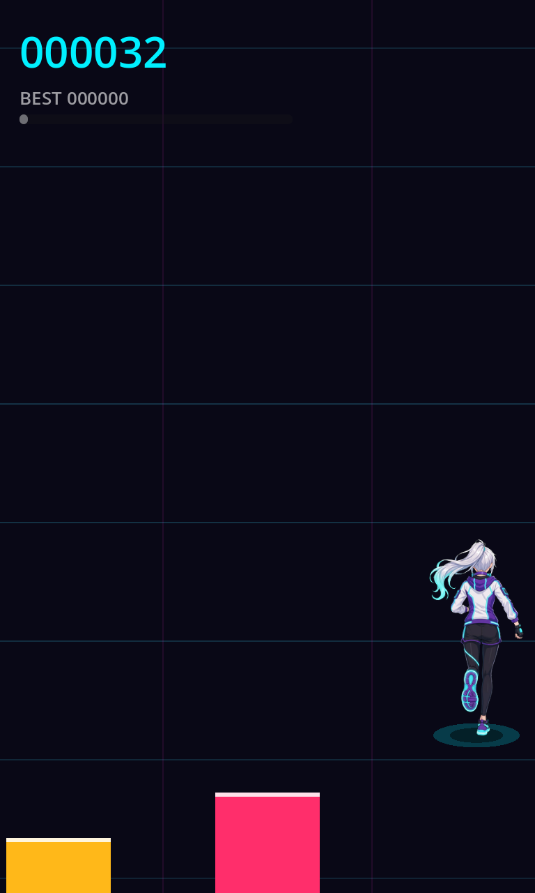
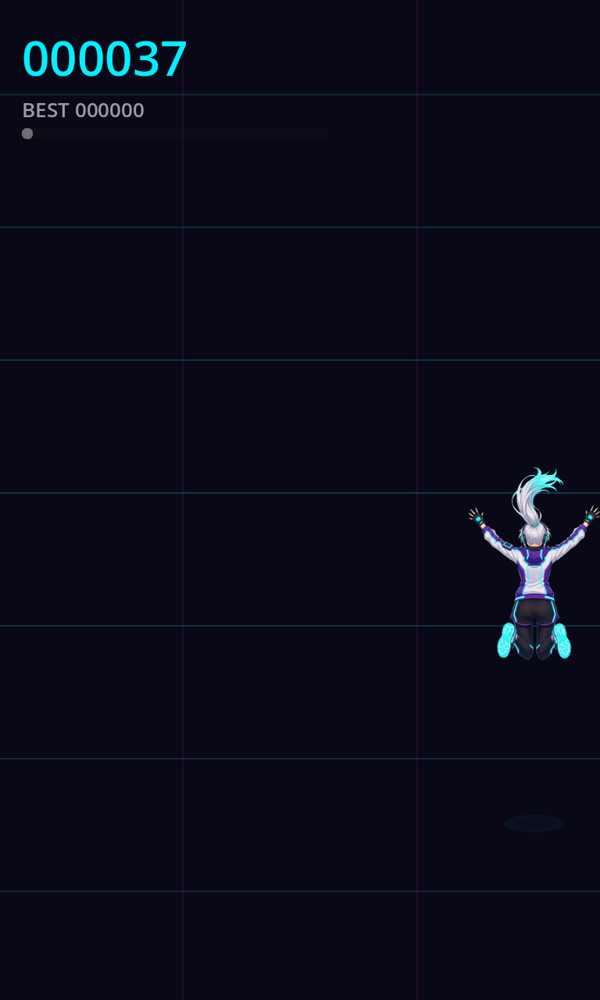
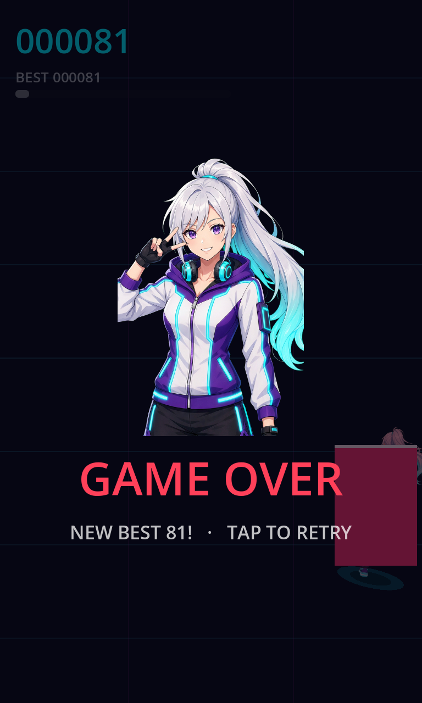
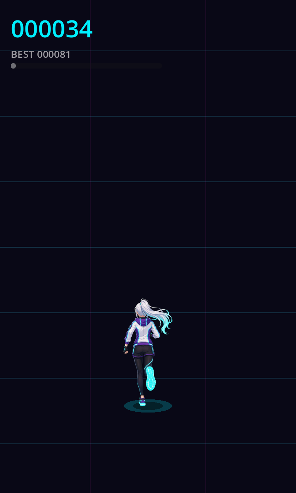

Run #16 · commit 5cd16c0 · screen 768x1280 ·
FPS (software GPU) min 25 / औसत 29.1 / max 33 · events 30
| ✅ | APK install हुआ | adb install rc=0 |
| ✅ | Game खुला (ready event) | ['ND_EVT ready best=0 viewport=768x1280'] |
| ✅ | Title screen दिख रहा है (काला नहीं) | bright pixels 11.39% |
| ✅ | Tap से game शुरू हुआ | ['ND_EVT state from=Menu to=Playing'] |
| ✅ | शुरू होने पर screen बदली | title↔playing अंतर = 22.41 |
| ✅ | बाएँ swipe से lane बदली | ['ND_EVT lane dir=Left to=0'] |
| ✅ | दाएँ swipe से lane बदली | ['ND_EVT lane dir=Right to=1', 'ND_EVT lane dir=Right to=2'] |
| ✅ | ऊपर swipe से कूदा | ['ND_EVT jump'] |
| ✅ | दौड़ते हुए score बढ़ा | scores [11, 28, 45, 62, 80, 8, 25, 42] |
| ✅ | रुकावट से टकराकर game over हुआ | ['score=81 best=81 newbest=True', 'score=55 best=81 newbest=False'] |
| ✅ | पहली बार पर 'NEW BEST' (bug fix) | पहला crash newbest=True |
| ✅ | Game Over state आया | ['ND_EVT state from=Playing to=GameOver'] |
| ✅ | Game Over पर screen बदली | jump↔game-over अंतर = 23.94 |
| ✅ | हर lane में player पूरा screen के अंदर दिखा | ['lane=0 x=84/768', 'lane=1 x=384/768', 'lane=2 x=684/768'] |
| ✅ | नया best बनते ही ऊपर BEST बदला (bug fix) | best=81, उसके बाद HUD में: ['81', '81', '81', '81', '81'] |
| ✅ | GAME OVER साफ़ पढ़ने लायक रंग में (bug fix) | text rgb=1.00,0.25,0.35, चमक=0.42 (कम से कम 0.30) |
| ✅ | लड़की की सारी तस्वीरें load हुईं (3 फ़्रेम + portrait) | [{'player_frames': '3', 'portrait': 'True'}] |
| ✅ | दौड़ने की animation चली (फ़्रेम बदलते रहे) | frame swaps [11, 26, 34, 49, 64, 72, 87, 102] |
| ✅ | कूदते समय jump वाला pose दिखा | ['ND_EVT pose name=jump'] |
| ✅ | Title screen पर लड़की की तस्वीर दिखी | title bright pixels 11.39% (portrait के साथ > 5%) |
| ✅ | बीच वाली lane में लड़की सच में दिख रही है (pixels) | player की जगह पर चमकीले pixels 26.4% |
| ✅ | Title पर game वाली लड़की छिपी, पीछे dim | ['visible=False dim=True', 'visible=False dim=True'] |
| ✅ | खेलते समय लड़की दिखे और dim हटे | ['visible=True dim=False', 'visible=True dim=False', 'visible=True dim=False'] |
| ✅ | Game Over पर पीछे dim (लिखावट साफ़) | ['dim=True', 'dim=True'] |
| ✅ | Tap से दोबारा खेल शुरू हुआ | ['ND_EVT state from=GameOver to=Playing'] |
| ✅ | कोई crash / C# exception नहीं | साफ़ |
| ✅ | अंत में game चालू था | pidof → alive |







कोई नहीं
events.txt · steps.txt · result.json · logcat-game.txt
Emulator: Android 34 AOSP x86_64, -gpu lavapipe (software GPU)। FPS असली phone जैसी नहीं है।